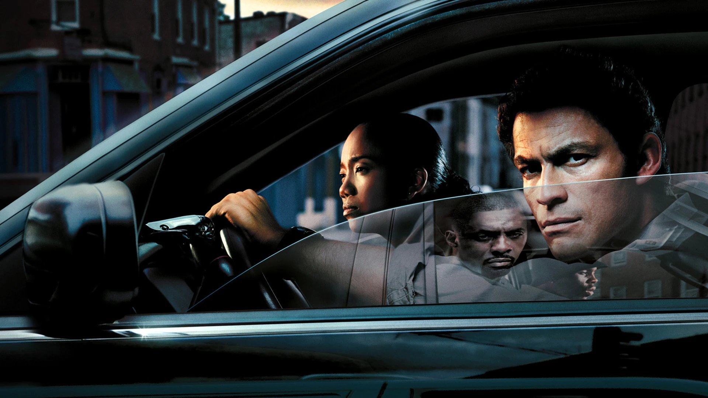

The Wire is an American crime drama television series created and primarily written by author and former police reporter David Simon. The series was broadcast by the cable network HBO in the United States. The Wire premiered on June 2, 2002, and ended on March 9, 2008, comprising 60 episodes over five seasons. The idea for the show started out as a police drama loosely based on the experiences of his writing partner Ed Burns, a former homicide detective and public school teacher.
